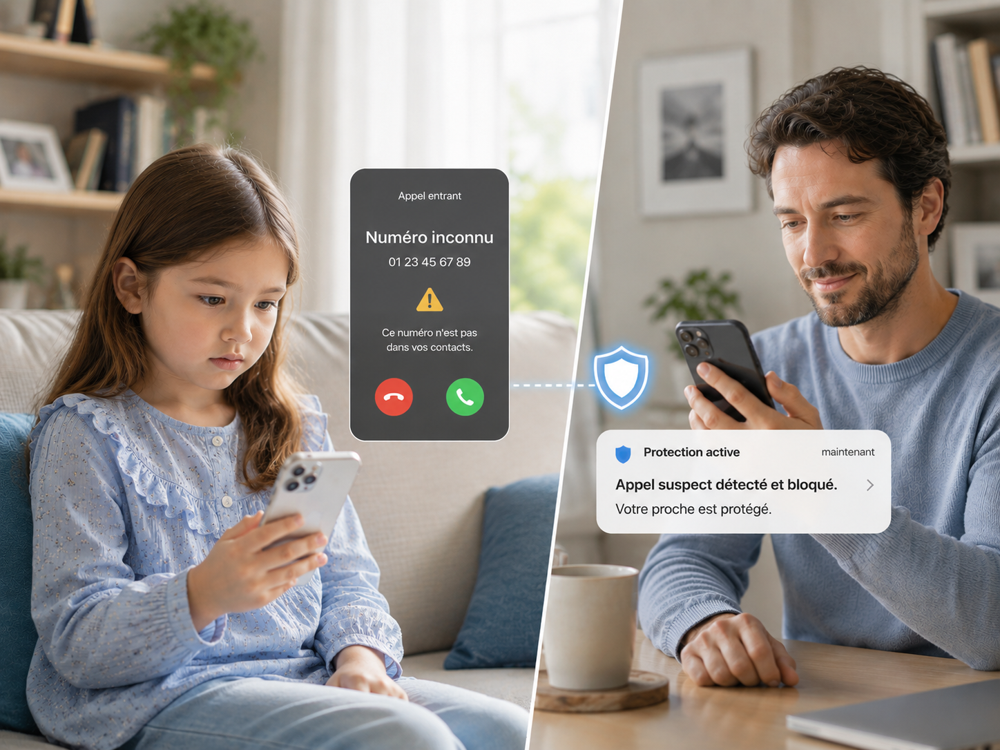
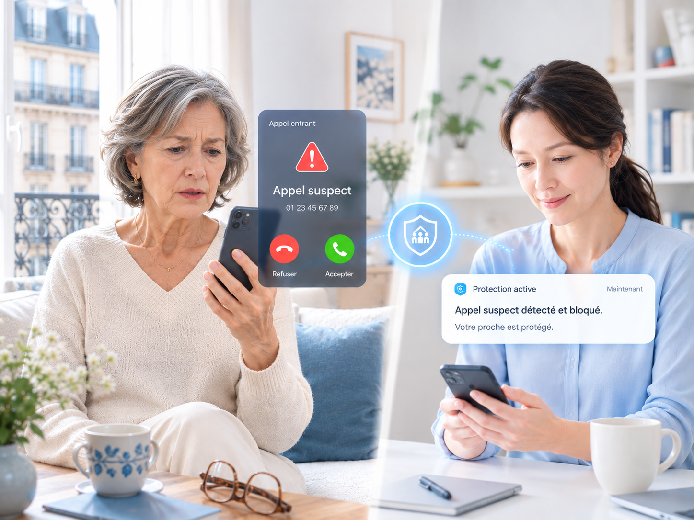

ENFANT · NUMÉRO INCONNUQuand la famille n'est pas là

Quand un numéro inconnu appelle votre enfant
Si un numéro inconnu ou suspecté d'arnaque appelle, le proche protecteur en est informé immédiatement.
Si un appel suspect arrive chez votre enfant ou vos parents, ou si un signal d'hameçonnage vocal est détecté pendant l'appel, la personne protectrice est alertée et peut, si besoin, rejoindre l'appel.
Pré-inscription gratuite — soyez informé·e en premier au lancement
Un signal suspect a été détecté pendant l'appel. Vous pouvez rejoindre si besoin.
Un enfant a du mal à juger si un numéro inconnu est sûr, et vos parents peuvent recevoir des appels d'hameçonnage se faisant passer pour un organisme public ou une banque. CALL X vise à réduire les cas où le proche protecteur ne l'apprend qu'après coup.

Si un numéro inconnu ou suspecté d'arnaque appelle, le proche protecteur en est informé immédiatement.

Si le numéro est suspecté d'arnaque ou qu'un signal d'hameçonnage vocal est détecté pendant l'appel, le proche protecteur en est informé.
Plutôt que de partager tout le contenu des appels, seules les informations nécessaires sont transmises au moment où un signal suspect est détecté.
Un appel arrive chez votre enfant ou vos parents.
Numéro inconnu, numéro suspecté d'arnaque, ou signal d'hameçonnage vocal pendant l'appel.
Les signaux suspects et les informations nécessaires sont transmis pour évaluer si l'appel doit être vérifié.
En cas de suspicion d'hameçonnage vocal, le proche protecteur peut rejoindre l'appel.
3 questions courtes maximum pour identifier à qui et sous quelle forme cette protection serait utile.
CALL X utilisera votre réponse pour déterminer par quelle protection commencer.
De l'appel d'un numéro inconnu à la suspicion d'hameçonnage vocal en cours d'appel, le proche protecteur est informé selon la situation.
Si un numéro inconnu ou suspecté d'arnaque appelle, le proche protecteur est averti — l'enfant n'a pas à juger seul.
Le proche protecteur peut vérifier rapidement et décider de la réponse à apporter.
Le signal suspect est transmis au proche protecteur, qui peut rejoindre directement l'appel si besoin.
CALL X ne partage pas en continu le contenu des appels avec le proche protecteur ; seules une alerte de risque et les informations nécessaires sont transmises en cas de suspicion d'hameçonnage vocal.
Plutôt que de surveiller tous les appels en temps réel, le proche n'est informé qu'au moment où un signal suspect est détecté.
De la simple alerte à la participation du proche à l'appel, plusieurs niveaux sont possibles.
L'évaluation du risque par l'IA peut être imprécise ; la participation réelle à l'appel reste toujours un choix de l'utilisateur·rice.
Dites-nous à qui et sous quelle forme CALL X serait le plus utile, en quelques questions.
Participer au sondage